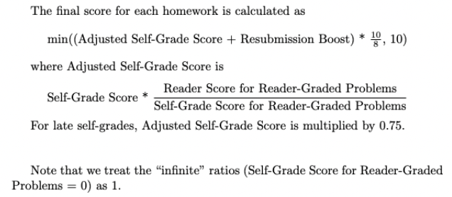

EECS16B, Designing Information Devices and Systems II
Fall 2022
Policies
Course Info
EECS 16B is a followup course to EECS 16A and can be considered a precursor to CS 70. The goal of the EECS 16 series is to introduce students to the various topics in the broad world of EECS while strengthening core mathematical principles to analyze linear systems as engineers. The EECS 16 series labs aim to provide students with real, hands-on applications of the concepts they learn in lecture and develop design-thinking skills.
EECS 16B will first walk students through more advanced circuitry; this first module of the class introduces students to the frequency domain, a tool critical to simplifying and analyzing many real-world systems. In the next module, students will understand stability and controllability of systems, pertinent concepts for robotics. In the final module, students will develop fundamental linear algebra building blocks, like SVD, to set them up to implement classification via PCA, a prominent algorithm in machine learning.
Simultaneously, in lab sections, students will apply these theoretical concepts to a real-world project: S1XT33N, a voice-controlled car. S1XT33N implements all the key system components students learn in lecture: analog sensor interface, control, and classification of collected data. Labs enable a deeper conceptual understanding of the course material, while improving students’ physical intuition and confidence with problem-solving skills: critical thinking, design thinking, and tenacity via debugging.
Grading
This class is graded using the bins and category breakdown below; the class is not curved, which means that you are not competing with your classmates by any means. For instance, if the entire class scores above 93%, everyone will receive an A.
| Category | Points (out of 300) |
|---|---|
| Participation | 10 points |
| Homework | 50 points |
| Labs | 80 points |
| Midterm | 70 points |
| Final | 90 points |
Notice that you can get many points by being regular with your homework and the labs. Our goal is to help you learn the material as best as possible!
Grade bins by percentage of points earned:
| A | [93+) | A- | [88+) | ||
| B+ | [84+) | B | [75+) | B- | [68+) |
| C+ | [65+) | C | [62+) | C- | [58+) |
| D+ | [57+) | D | [55+) | D- | [53+) |
| F | [0-, 53) |
Note that if you choose P/NP grading you must get a C- or above to be able to pass the class. If you take the class for a letter grade, you must get a D- or above to pass.
Good Citizenship and Professionalism
The classroom is a professional environment, and we expect that students treat each other and staff with respect. We reserve the right to apply negative points to a student’s grade for inappropriate or unprofessional behavior. Any rude, dishonest, unhelpful, or otherwise unprofessional behavior within the fora of the course — be it in-person or online; be it discussion, lecture, Ed, Discord, homework party, or office hours—will result in negative points in the respective grade category.
Discussion Policies
Discussion is a key component to learning the material in this class, and to keep you motivated and on track, you can earn points towards your grade by attending discussion. Participation is worth a maximum of 10 global points. To earn this in full, you must attend at least 16 discussions. To measure attendance, we will have the following system in place: when you attend a discussion section, your TA will give you a password to input into a checkoff Gradescope assignment associated with their section. Credit will only be granted for checkoff forms submitted before the end of the next day. If you do not get full credit, your grade will be prorated by the number of discussion checkoffs you complete; e.g., if you attend 14 discussions or complete 14 checkoffs, you will have 14/16 * 10 = 8.75 points in this category.
Homework Policies
Homework Submission - Turn in a single .pdf file to Gradescope consisting of your written (or typed) solutions and, if applicable, a pdf “printout” of any .ipynb code. Homeworks are due on Friday night at 11:59 PM Pacific Time. Once you’ve submitted your pdf, you must select the relevant pages for every problem on Gradescope - any problems without pages selected will receive zero credit. If you forget to select pages, please submit a regrade request for each subpart where this applies. Any coding questions that do not have the corresponding pages of your code “printout” selected will receive zero credit.
Homework Self Grades - After solutions are released, complete a self grade for your homework submission. Self grades are required to get credit for the homework and are due Friday at 11:59 PM after the PDF deadline. We will further accept late self-grades up to a week after the self-grade deadline for 75% credit on the associated homework assignment. Any later submissions will receive a zero on that assignment.
[Optional] Homework Resubmission - If you skipped any questions or did not receive full credit for them, submit a resubmission for 40% credit. Resubmissions are due at the same time as self grades and must be handwritten. A resubmission can involve you redoing as much or as little of the homework as you see fit (meaning you do not have to redo all of the problems), but any subpart you choose to resubmit must be redone from scratch - do not pick up where you left off in the original submission. If you choose to do a resubmission, you must submit a resubmission self grade.
What does 40% credit mean? Let us say you only were able to get halfway through a problem during the first submission. You submitted your homework on Friday, and while going through the solutions you figured out how to do the whole problem. Your self-grade for your first submission would be a 5/10. However, you can resubmit the homework problem with a fully correct solution and receive 40% of the remaining points as extra points, i.e. (10-5) * 40/100 = 2 extra points, and so your score for the problem would go from 5 points to 7 points.
[Optional] Resubmission Self Grades - If you submitted a resubmission, submit a resubmission self grade to receive credit for the resubmission work. Resubmission self grades are due at the same time as regular self grades. In this self grade, give yourself a zero for any work you did not redo, even if you completed the problem in the original submission. For any subpart you did redo, self grade that subpart normally. We will calculate all of your resubmission point gain with the 40% credit policy when we calculate your homework grade; no need to do it in your self grade.
Self Grading
After the HW deadline, official solutions will be posted on Ed and the class website, and a self-grade assignment will be opened on Gradescope. You will then be expected to read the solutions carefully and enter your own scores and comments for every part of every problem in the homework into the self grade assignment on the following scale:
| Score | Reason |
|---|---|
| 0 | Didn't attempt or very very wrong |
| 2 | Got started and made some progress, but went off in the wrong direction or with no clear direction |
| 5 | Right direction and got halfway there |
| 8 | Mostly right but a minor thing missing or wrong |
| 10 | 100% correct |
You must justify self-grades of 2, 5 or 8 with a comment. Grades of 0 and 10 do not need to be justified. If you are really confused about how to grade a particular problem, please post on Ed. This is not supposed to be a stressful process.
Homework Grading Scheme
After the homework deadline has passed, a subset of the homework problems will be graded by our readers. Reader grades will be released on Gradescope about one week after the homework deadline. Homework regrade requests are typically due on Gradescope within 72 hours of reader grades being released. If a regrade request is submitted for a part of a question on the homework, the grader reserves the right to regrade the entire homework.
The grade you receive from the readers on this subset of problems is not your grade for the entire assignment. Your grade will instead be calculated primarily using your self grades, as outlined in the diagram below.
Because the point of homework in this class is to help you learn, not to punish you for making small mistakes, if your final score (after resubmission and any other corrections are applied) on any homework is at or above 8/10, your grade will automatically be bumped up to 100% (10/10). If your final score is less than 8/10, it will be scaled linearly, so a 6/10 will result in 6/8, or 75% (effectively 7.5/10).
Homework Accommodations & Exceptions
We will automatically drop the lowest homework score from your final grade calculation. This drop is meant for emergencies. In addition to the one-drop policy, we will automatically approve extensions for up to 2 assignments, each with an extension period of up to 3 days. Please submit your extension requests using this Google Form. If solutions are released before your post-extension deadline, we expect you to maintain integrity and avoid looking at the solutions until after completing and submitting the assignment.
These extension requests are reserved for regular homework submissions only. If you are granted an extension on your regular homework submission, the extension also applies to your self-grade and resubmission assignments. You must submit the extension request prior to the homework deadline for it to be approved.
We also understand that assignment submission can be accompanied by last-minute technical difficulties, which is why we have enabled a one hour grace period for all assignments. That being said, we will not grant retroactive extensions due to technical difficulties.
Lab Policies
For all lab policies, please see the lab syllabus here, which includes information on lab grading, logistics, schedule, and more.
Exam Policies
We will have one midterm and one final. The midterm time is Monday, October 17, 7-9pm Pacific Time. The final will be held on Friday, December 16, from 7-10 pm Pacific Time.
The exams are planned to be in-person on the Berkeley campus at those times. These will be closed-book exams with a specified number of “cheat sheets,” which must be handwritten and not tablet generated. For the midterm, you will be permitted one 8.5 by 11 inch cheat-sheet, double-sided; for the final, you will be permitted three 8.5 by 11 inch cheat-sheets, double-sided.
Makeup exams will not be scheduled. No alternate exams will be offered due to class conflicts, particularly for the final. In general, alternate exam times will NOT be provided. If you have any concerns or in case of an emergency on exam day, please email eecs16b-fa22@berkeley.edu as soon as possible and provide details of the issue. Emergency exam conflicts will be handled on a case-by-case basis.
Exam regrade requests will be released on Gradescope soon after exam scores are released. Late regrade requests will not be considered. If a regrade request is submitted for a part of a question on the exam, the grader reserves the right to regrade the entire exam and could potentially take points off.
Exam Clobber Policy
The midterm and final will test your understanding of course material. We want to reward improvement, so we will offer a penalized clobber of the midterm exam through the final: true midterm grade = max(original midterm grade, final exam grade - 5%). You can qualify for the clobber by taking the midterm and completing the midterm redo assignment; no exceptions will be made. Skipping the midterm entirely is not permitted. In previous semesters, the midterm redo assignment consisted of re-doing the entire exam. This semester, you only need to redo incorrect problems (as opposed to the entire exam) and write a brief explanation (1-2 sentences) describing why your initial solution is wrong. If you are unsure whether you would receive full credit for a problem, talk to a friend or someone on staff and submit a redo! Any honest attempt at a problem redo is sufficient.
Rest assured, you can miss redos for up to 2 problems and still qualify for the clobber. We will use your clobbered midterm score only if it benefits your overall grade; otherwise, your original midterm score will be used.
Student Support
Homework Party / Office Hours
This semester, Homework Party and Office Hours will be held at the same time on Wednesday from 10am-12pm and 3pm-5pm and Thursday from 10am-12pm (see the course schedule for the location). Collaboration is an essential, symbiotic skill for any engineer; to these ends, we will only answer homework-related questions coming from a group. We will also be providing individual support for non-lab conceptual or administrative questions. Please use the EECS 16B OH Queue tool for individual questions.
Ed
We will support all student questions (except for lab debugging questions) over Ed, our official course forum. We will also be releasing announcements through Ed, so please keep up to date with its happenings.
Anonymous Feedback
It can be challenging for the instructors to gauge how smoothly the class is going. We always welcome any feedback on what we could be doing better. If you would like to send anonymous comments or constructive criticism, please fill out the anonymous feedback form. Non-anonymous feedback can be provided through private Ed posts. Public posts are not an appropriate way to give feedback or make bug reports.
Study Group Formation and Expectations
Course staff will be facilitating the formation of study groups this semester—we will make an Ed post with the complete information. Our goal is to make sure that everyone who wants a study group can have one where they are treated professionally and expected to behave as such.
For more private concerns, you are welcome to contact us over email at eecs16b-fa22@berkeley.edu.
Extensions and DSP Accommodations
We understand that life can get hard sometimes, which is why we will consider your request for assignment extensions for homeworks, labs, and lab reports, which you can submit over this Google Form. We will automatically approve extensions for up to 2 assignments, each with an extension period of up to 3 days. We will also be approving DSP-related extension requests through this form. If solutions are released before your post-extension deadline, we expect you to maintain integrity and avoid looking at the solutions until after completing and submitting the assignment.
If you encounter what you believe will become an ongoing emergency over the course of the semester, please contact eecs16b-fa22@berkeley.edu or the DSP office to discuss accommodations extending beyond individual assignments. Note that these exceptions are less common and typically require more documentation than exceptions for individual assignments.
Accommodations will be provided to students who have letters of accommodations from DSP services and students facing hardships.
Berkeley Honor Code
Everyone in this class is expected to adhere to this code: “As a member of the UC Berkeley community, I act with honesty, integrity, and respect for others.”
Using previous EECS 16B homework, exam, and lab solutions is strictly prohibited – even if these are posted elsewhere – and will be considered academic dishonesty. Such dishonesty can result in negative points, as well as possible referral to the Office of Student Conduct. This is not how you want to start your career as an engineer.
Collaboration during exams or other designated assessments is strictly forbidden, subject to the Berkeley Honor Code, Code of Conduct, and the parameters of the specific assessment. Improper collaboration can result in negative points to the respective grade category, as well as possible referral to the Center for Student Conduct.
Policy on Course Content
You are free and encouraged to study from course materials to further your personal or professional goals (in collaborations with other students, in your research, etc.). You may NOT post HW/Exams/Solutions anywhere on the web because this could encourage cheating down the road. You are expressly prohibited from uploading course materials to websites such as coursehero.com or chegg.com, which distribute and monetize content without compensation to the University. Course material, including all video, is copyrighted and reposting to third party sites or any other form of redistribution is prohibited. We see this as unprofessional conduct, and students who violate this may be subject to negative points in the respective grade category.
Inclusion
We are committed to creating a learning environment welcoming of all students that supports a diversity of thoughts, perspectives, and experiences, and respects your identities and backgrounds (including professional goals, race/ethnicity, nationality, gender identity, socioeconomic class, sexual orientation, language, religion, ability, etc.). As a participant in this class, recognize that you can be proactive about making other students feel included and respected.
If something is said in class (by anyone) that makes you feel uncomfortable, disrespected, or excluded by a staff member or fellow student, please report the incident so that we can work to address the issue and create a more supportive and inclusive learning environment. Some options:
- The EECS 16B anonymous feedback form
- Via email to our instructors, head TAs, or another member of staff you're comfortable with
- The department's Student Climate and Incident Reporting Form
Additionally, if you feel like your performance in the class is being impacted by your experiences outside of class (e.g., family matters, current events), please don’t hesitate to come and talk with us. We want to be resources for you.
Campus Resources
Counseling and Psychological Services (CAPS) - offers a variety of mental health services and resources in order to support your academic success and self-development as a student at UC Berkeley.
Disabled Student’s Program - serves students with disabilities of all kinds. Services are individually designed and based on the specific needs of each student as identified by DSP's Specialists.
Office for the Prevention of Harassment and Discrimination (OPHD) - takes reports alleging discrimination and harassment on the basis of categories including race, color, national origin, gender, age, and sexual orientation/identity, which includes allegations of sexual harassment and sexual violence.
Ombudsperson for Students - provides a confidential service for students involved in a University-related problem (academic or administrative), acting as a neutral complaint resolver and not as an advocate for any of the parties involved in a dispute.
PATH to Care Center - a 24/7, confidential, free, campus-based resource for urgent support around sexual assault, sexual harassment, interpersonal violence, stalking, and invasion of sexual privacy.
Technology Needs (STEP) - provides laptops and other technologies for free and is for undergraduate, graduate, and professional students.
UC Berkeley Food Pantry - aims to reduce food insecurity among students and staff at UC Berkeley.
Land Acknowledgment
We recognize that Berkeley sits on the territory of Huichin, the ancestral and unceded land of the Chochenyo Ohlone, the successors of the historic and sovereign Verona Band of Alameda County. This land was and continues to be of great importance to the Ohlone people. We recognize that every member of the Berkeley community has, and continues to benefit from the use and occupation of this land, since the institution’s founding in 1868. Consistent with our values of community and diversity, we have a responsibility to acknowledge and make visible the university’s relationship to Native peoples. By offering this Land Acknowledgment, we affirm Indigenous sovereignty and will work to hold University of California Berkeley more accountable to the needs of American Indian and Indigenous peoples.